@淘宝推荐场景的利器：融合复杂目标且支持实时调控的重排模型
链接：淘宝推荐场景的利器：融合复杂目标且支持实时调控的重排模型，王原博士，淘宝
想法
整理一下他们发在外部的分享，在内部 ATA 上分享的内容更加详细。
摘录
业务场景
- 淘宝关注页面推荐
复杂信息面临的挑战与重排的独特优势
- 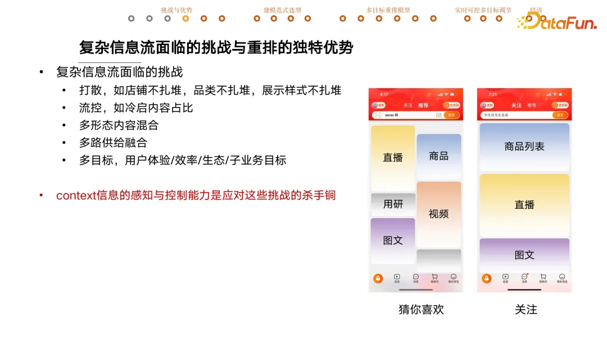
利用重排模型替代部分业务规则
- 但是重排模型后面还会有硬性用户体验规则限制，不满足时会丢弃重排的结果。
- 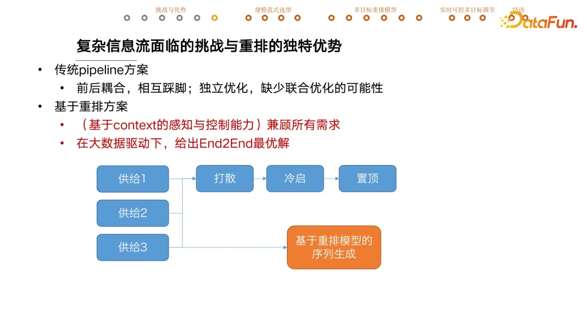
重排范式
-
V1 部分 Context 感知 + 单点打分 + greedy 排序
- 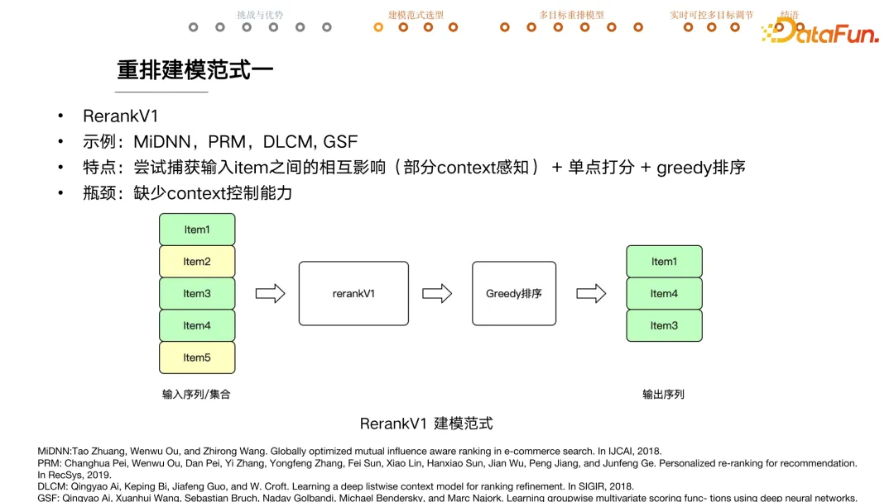
-
V2 逐步选取 item
- 问题
- 监督学习方式需要有 label，生成每一步时都需要最优选择作为 label。
- 比如有多种内容供给、多种目标、多种业务需求情况下，如何知道最优序列是什么呢？
- 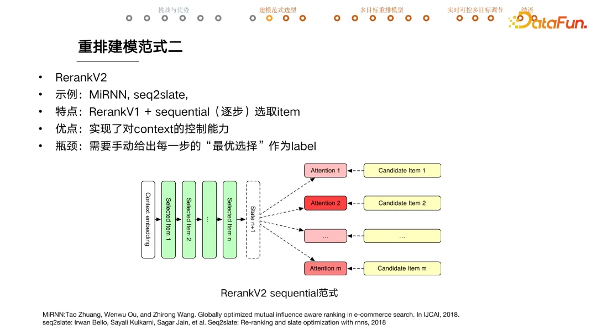
- 问题
-
V3 强化学习
- 利用 reward 替代 label，而且无需可导。
- 序列一般会用 ndcg 来评估，该指标不可导。
- 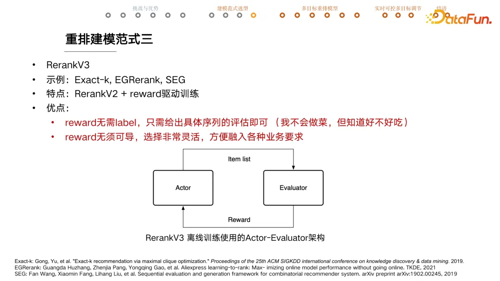
有机融入多目标的重排模型
-
问题定义
- U 是业务目标，w 是目标权重
- Lw* 是 reward 最大的序列
- 利用 actor 训练能生成逼近 Lw* 的序列
- 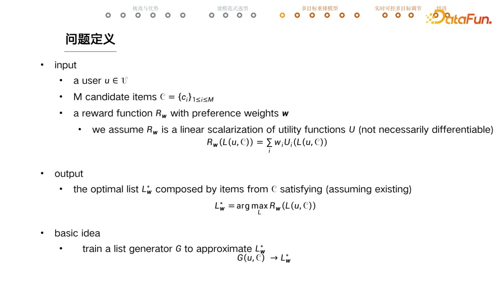{:height 583, :width 1021}
-
序列生成器
- Encoder + Decoder 结构
- 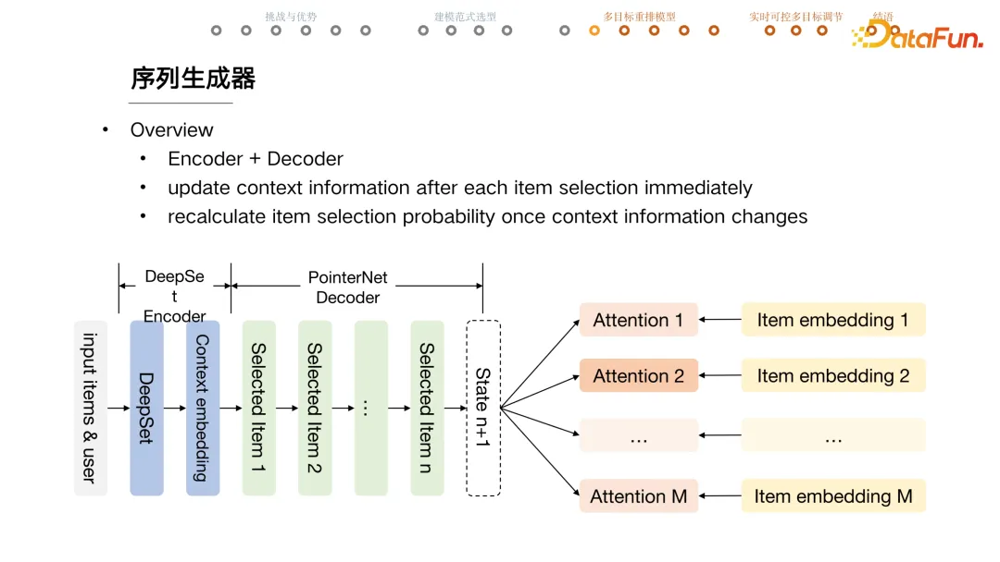
- Encoder + Decoder 结构
- [[DeepSet]] encoder，建模 item set 集合（与 item 顺序无关），用 user + set 信息，重新生成 item embedding
- 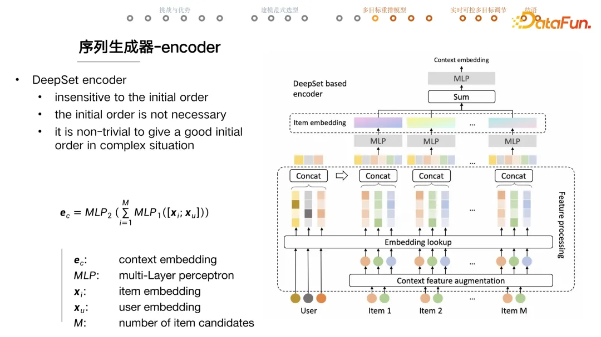
- Pointer Net + RNN 生成序列，与输入序列的长度无关。
- rnn 的 output 作为 key
- 计算过程中 mask 不能选择的 item
- local context enhanced attention，通过特征工程和人工规则降低模型学习难度
- item embedding 和 state
- 针对 state 和 item 的 local context
- 第一个特征是目前为止冷启内容的占比是多少
- 第二个是当前这个 item 在前序有没有重复，帮助重排模型做好店铺打散。
- 通过一系列加工的特征可以帮助模型快速捕捉业务意图。
- 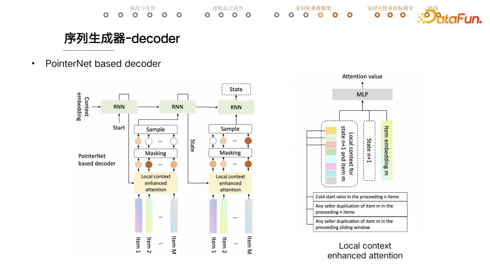
-
序列评估
- 中间五个模块（sum pooling、forwar&concat、multi-head self attention、RNN、Pair-wise comparison）从不同角度提取 list 特征输入到 mlp 预测。
- 比如用户会不会点击这一页上的任意一个商品或者点击数是多少
- 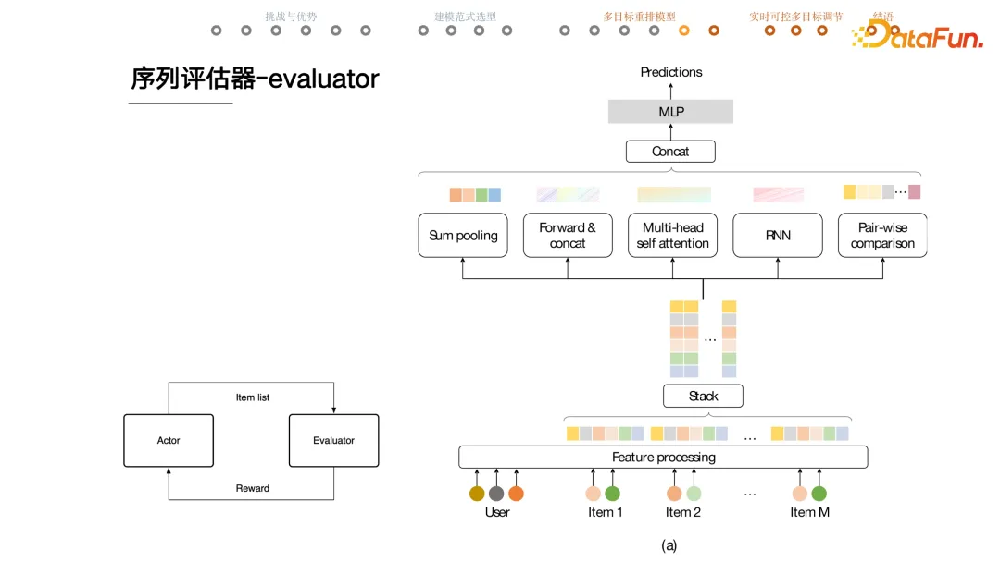
-
模型训练
- evaluator
- 常规 loss，训练是否页面有点击之类的。
- 充分训练后固定模型，再去训练 actor
- generator
- REINFORE based Algorithm
-
- reward = 当前序列 reward - 线上序列 reward，让模型能生成优于线上的序列
- 给定 user 和 candidates，计算 generator 生成这个序列的 probability，reward 高的序列应该有更大概率生成。
- 下图例子，每一列是当前选择 item 的概率，连乘再一起就是生成当前序列的概率。
- 论文中有如何设计将业务目标融合到模型中
- 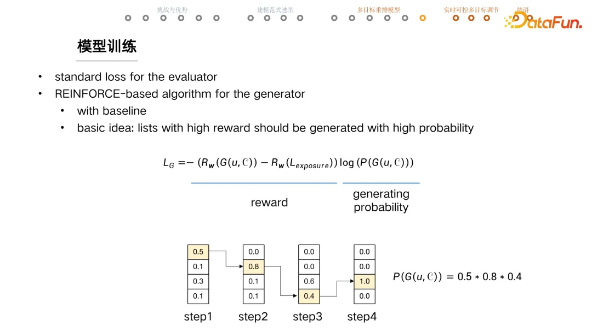
- evaluator
-
@基于超网络的实时可控重排模型
问答
- Q9**：重排使用精排模型的分数，后续精排模型迭代的问题怎么解决？**
- 精排模型通过校准把预估的点击率锚定到真实点击率含义上的那个物理值去，保证这个预估值到达重排模型的时候是稳定的。
- Q13**：重排模型的离线指标看什么？**
- 获取到的 evaluator 的 reward，还有一个指标是 better percentage（生成重排序列 reward 由于线上展示序列的概率，>= 50%)
@淘宝推荐场景的利器：融合复杂目标且支持实时调控的重排模型